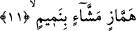
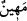

Allah’ı iyilik etmenize, ondan sakınmanıza ve insanların arasını düzeltmenize
engel kılmayın” (el-Bakara, 2/224) âyet-i kerîmesidir.
Yukardaki “çok yemin eden” kavramına Allah’ın adından başka bir şey üzerine yemin
etmek de dâhildir. Çünkü Allah’ın adından başka bir şey üzerine yemin etmek büyük
günahlardandır. Âyetin deyimiyle “hılf”in aslı yemindir. Yemin bâzı kimselerin
bâzılarından almış oldukları “hılf” yâni ahiddir. Sonra bu ahd ile her türlü yemin ifâde
olunmaya başlanmıştır.
Âyetin içinde yer alan “ /mehîn” aşağılık demektir. Gerek görüşü gerekse
hareketleri hakir olan kimse için kullanılır. Bir kişinin aşağılık olmasının nedeni,
Allah’ın azametini tanımayışından dolayıdır. Bu nedenle alabildiğine çok yemin etme
niteliğinin hemen arkasından aşağılık sıfatı getirilmiştir. Mehânet; hakirlik ve
değersizliktir. Bu kelime ile o kişinin “kezzâb” yâni çok yalancı olduğu kasdedilmiş de
olabilir. Çünkü çok yalan söyleyen kimse, insanların nezdinde hakirdir.
11. Dâima kusur arayıp kınayan, durmadan lâf götürüp getiren,
Âyette yer alan “hemmâz” çok ayıplayan, çok kusûr bulan; insanların arkasından veya
yüzlerine karşı ayıplarını söyleyen, onları ta’n eden kimse demektir.
Hasan (rh.) der ki: “Hemmâz,” insanların karşısında avurtlarını gere gere konuşan
kimse demektir. Âyet-i kerîmedeki bu kelime insanları ayıplayan, hak ehlini yaptıkları
riyâzat, nefis mücâdelesi, inzivâya çekilme ve insanlardan uzakta kalmaları dolayısıyla
kusurlayan kimseye işâret etmektedir. Bir hadis-i şerifte; “Bir mü’min; çok ayıplayan
ve çok lânetleyen bir kişi olamaz” buyurulmaktadır.[41] Bir diğer hadis-i şerifte
Peygamber Efendimiz; “Kendi ayıbı ile meşgul olmaktan insanların ayıplarını
görmeye fırsat bulamayan kimseye ne mutlu” buyurmuştur.[42] Bu şu demektir: Kendi
nefsinin ayıbına bakan; kendisiyle meşguliyeti, başkasının ayıbına bakmasına ve onu
ayıplamasına engel olan kimseye ne mutlu! Bu durum, kişinin Allah Teâlâ’ya isyân eden
birisini gördüğünde işlediği bu mâsiyetten onu kaçındırması gerekmediği anlamına
gelmez. Çünkü başkasını mâsiyetten sakındıran kişi, Allah’ın “münker”i yasaklama
yolundaki emrine uymuş olmaktadır. Yoksa bu, kendini beğenip de bir başka kimsenin
Allah nezdindeki değerini alaya aldığından değildir. Allah Teâlâ, her şeyin içyüzünü en
iyi bilendir.
“Hemmâz”, hâmiz kelimesinin mubalağalı ism-i fâilidir. Arapçada “hemz” birisini
ayıplamak, birine vurmak, kırmak ve birinde kusur bulmak mânâlarına gelir. el-Mihmiz
ve el-mihmâz, hayvanların dürtülmüş olduğu demir çubuğa denir ki bu da kelimenin
içindeki dürtme, vurma ve kırma anlamlarına işâret etmektedir.
Bir bedeviye: “Sen fâreyi vurup dürtebilir misin?” diye sorulur. Bedevi, “onu kedi